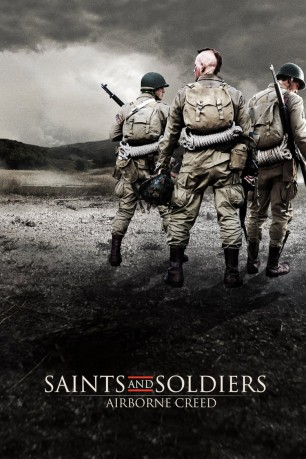

#10228 Saints and Soldiers 2 - Airborne Creed
 
 IMDB-Wertung: 5.7 / 10
IMDB-Wertung: 5.7 / 10  Metascore: 0
Metascore: 0 
Am 15. August 1944 beginnen die Amerikaner mit einer Invasion gegen die Nationalsozialisten in der Provence, Frankreich. Die Operation soll die bereits zwei Monate zuvor in der Normandie gelandeten Truppen auf ihrem Marsch nach Berlin unterstützen. Drei Männer der 517th Parachute Regimental Combat Team (PRCT) verfehlen das Ziel des nächtlichen Absprungs. Die drei Soldaten Rossi (Corbin Allred), Curtis (Jasen Wade) und Jones (David Nibley) sollten sich eigentlich in der Ortschaft Les Arcs mit ihren anderen Kameraden treffen. Auf ihrem Weg dorthin begegnen sie nun allerdings französischen Widerstandskämpfern, welche die US-Soldaten um Hilfe bitten. Zusammen mit den Franzosen organisieren sie einen Hinterhalt gegen eine deutsche Panzereinheit und riskieren ihr Leben…
Jahr: 2012
Dauer: 97 Minuten
FSK: 16
Land: USA Studio: Purdie DistributionTonspuren: DTS - ,
Untertitel:
Auflösung: 1080p (1920x816) Größe: 5181 MB
Genre: Action, Drama, Krieg
Regisseur: Ryan Little
Drehbuch: Lamont Gray, Lincoln Hoppe
Soundtrack: J Bateman
Darsteller:
- Corbin Allred als Cpl. James Rossi
- David Nibley als Sgt. Caleb Jones
- Jasen Wade als Cpl. Harland 'Bud' Curtis
- Lincoln Hoppe als Erich Neumann
- Nichelle Aiden als Charlotte
- Rick Macy als Antoine
- Trenton James als Pvt. Gates
- Erich Cannon als Gustave
- John Lyde als German in Cellar
- Curt Doussett als Lt. Woodward
- Calvin Harrison als Pvt. Stewart
- Chris Provost als Pvt. Pinder
- Adam Abel als French Partisan #3
- Andrew Troy als German Soldier
- Virginie Fourtina Anderson als Emilie
- Loic Anthian als Phillipe
- Lance Otto als Jacques
- Trever Anderson als Firing Squad Leader
- Ryan Gale als Young Partisan
- Hyrum Palmer als Schmidt
- Lance Jensen als Pvt. Cooper
- Will Lyu als Pvt. Lee
- Randy Beard als German Patrol Leader
- Gibbs als German Shepherd
- Paul Nibley als Sgt. Jones' Father
- Nate Harward als German Motorcycle Driver
- Garin Clark als German Crossroad Guard #1
- Perry Atkin als German Guard #2
- Ian Sanderson als Hiding German #1
- Cory Maxfield als Hiding German #2
- Mark Thomas als French Partisan #1
- Ivan R. Bird als French Partisan #2
- Jamie Strouss als Panzer Gunner
- Scotty Meek als Cpt. Edwards
- Mitchell Guarente als Zoot
- David Turley als Medic
- Matt Jarman als American Jeep Driver
- Roger Condron als M18 Hellcat Driver
- Chip Guarente als Military Police
- Jessica Segrest als Nurse
- Wade Hollingshaus als Medical Clerk
- Lanier Lucas als Field Doctor
- J Bateman als French Partisan #4
- Christopher Michael Ballam als WWII Reenactor
- Greg Brubaker als L5 Liaison Pilot
- David Hales als German Soldier
- Marshall Matthews als WWII Re-enactor
- Andrew Quezada als German Machinegunner
- Frank Scholer als German Soldier
- Brenden Whitney als German Feldwebel
Datei: X:\3-Trilogie(N-Z)\Saints and Soldiers\Saints and Soldiers 2 - Airborne Creed (2012, FSK16, 1920x816).mkv seit 25.12.2018
Festplatte: HD Collection-3(N-Z)-6(A-Z)
 Alle Filme aus Gruppe '3-Trilogie(N-Z)\Saints and Soldiers'
Alle Filme aus Gruppe '3-Trilogie(N-Z)\Saints and Soldiers'